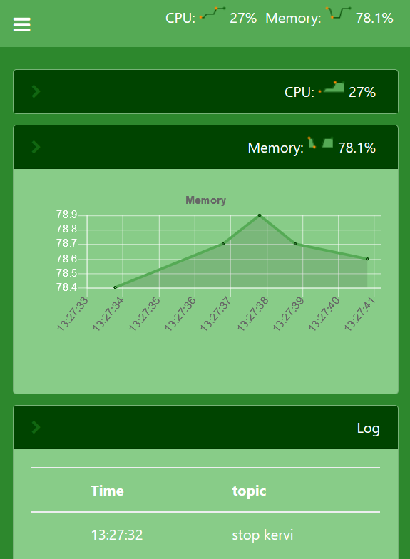
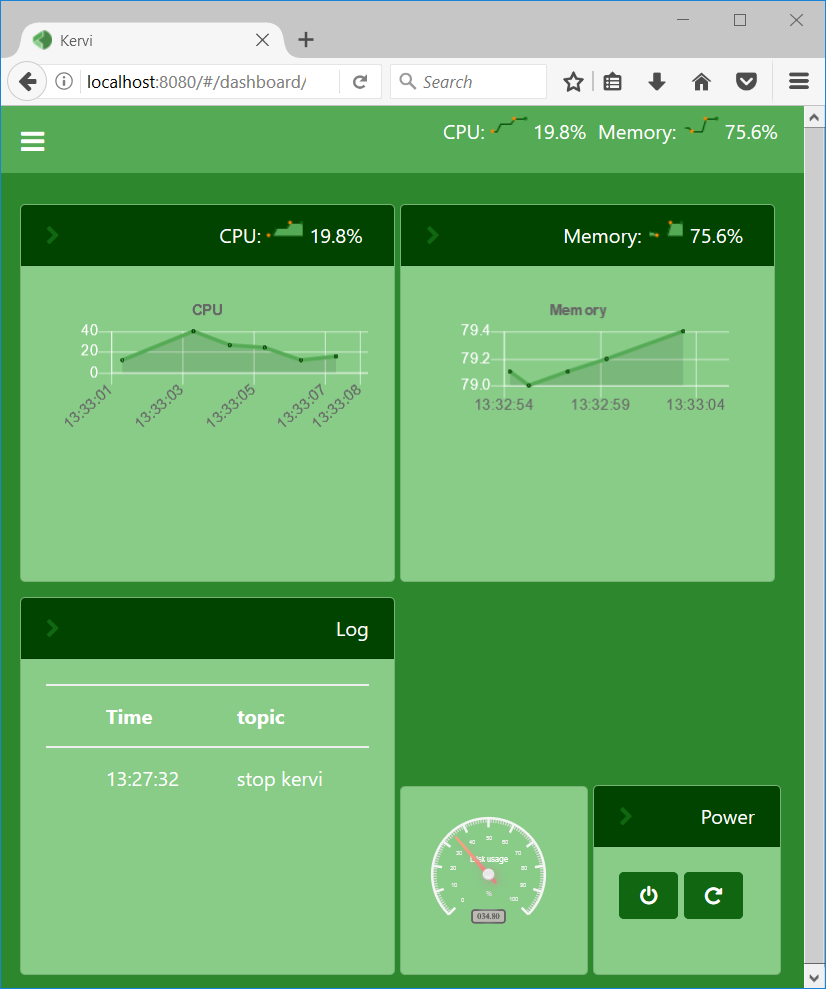

Dashboards¶
An application may define one or more dashboards if it is a home automation application A dashboard could be a room or a floor.
Each dashbord contains one or more panels where it is possible to link sensors, controllers and camera output.
The dashboards are responsive and ajust to the width of the browser. Below is the same dashbord in mobile and browser view.
 {kind=link}
{kind=link}
The code below shows how to configure the dashboard above
SYSTEM = Dashboard("system", "System")
SYSTEM.add_panel(DashboardPanel("cpu", columns=2, rows=2, collapsed=True))
SYSTEM.add_panel(DashboardPanel("memory", columns=2, rows=2, collapsed=True))
SYSTEM.add_panel(DashboardPanel("log", columns=2, rows=2, title="Log", user_log=True))
SYSTEM.add_panel(DashboardPanel("disk", columns=1, rows=1))
SYSTEM.add_panel(DashboardPanel("power", columns=1, rows=1, title="Power"))
On large displays the columns and rows specify the size of a panel where the cell size is 150x150 pixels. When a component is linked to a panel it is specified how many cells that component should occupy in that panel.
#sensor that links as a radial guage
self.link_to_dashboard("cam", "panel1", type="radial_gauge")
#A sensor that links to the header of a panel and into the body.
self.link_to_dashboard("system", "cpu", type="value", size=2, link_to_header=True)
self.link_to_dashboard("system", "cpu", type="chart", size=2)
#A button that links to a panel with an icon.
self.link_to_dashboard("system", "power", icon="power-off")